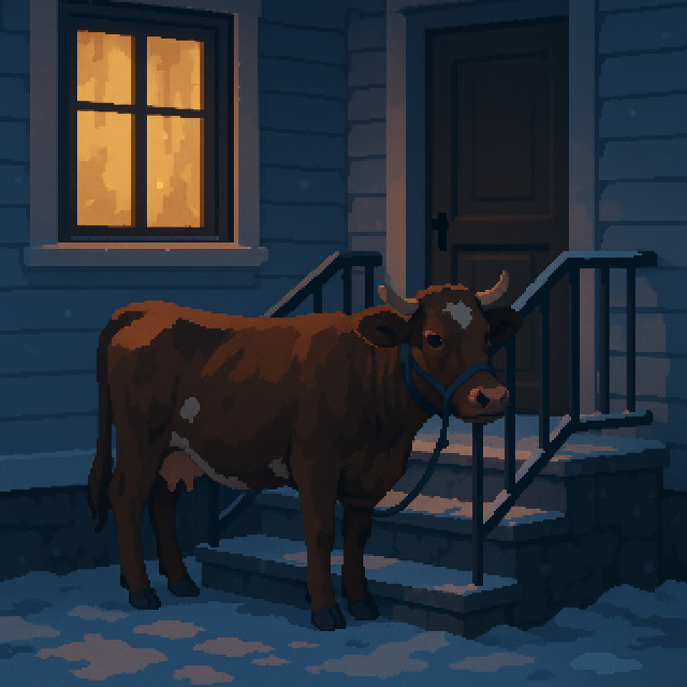

Se for deg livet som en ung ku. Du bruker dagene dine på drøvtygge gress sammen med andre kuer på gården du bor på et sted i Romerriket.

En kald dag i januar hvor du står inne i det varme fjøset kommer det noen fremmede til gården som snakker et språk du ikke forstår.

De har penger og plutselig blir du dratt fra det varme fjøset og inn i en henger bak en bil. Du skal ikke bli burger, du er på vei til å bli en internettkjendis.
GRIMS KU
Det var en helt vanlig onsdag for Sebastian Ring Gjerlaugsen. Gjerlaugsen kjøpte en enebolig for 8 500 000 kr i Tistedal i slutten av året 2022. Hvordan har han råd til det? Han er en Youtuber og streamer under aliaset Grim. På sine kanaler som nå er fjernet, lager han videoer hvor han gambler med ekte penger på skins.
Hva er skins?
Skins er kosmetiske endringer på karakterer eller våpen i et spill. Dette konseptet blir også brukt i skytespillet Counter Strike (CS). I CS bruker spillere ekte penger på å skaffe seg disse skinsene. Prisen på et skins påvirkes av to faktorer: hvor sjeldent det er og hvor stor etterspørselen er. Dette gjør at skins kan få høy verdi. Per dags dato er det dyreste skinet i CS, kalt Karambit Case Hardened (Pattern 387 "Blue Gem"), verdt 1.5 millioner dollar, samtidig som noen skins bare kan være verdt noen ører.
På videoene åpner han cases hvor våpen med høy verdi flyr forbi på skjermen. Spenningen er til å føle på. Det er akkurat som casino-maskiner i Las Vegas, men det er bare ett tastetrykk unna. Det er mange som liker å se på disse videoene, og mange av dem er mindreårige.
Hva er case?
Cases er en måte å skaffe seg skins i CS. Spillere får et case i uka hvis de spiller nok. Du må kjøpe en nøkkel til et case for å kunne åpne det. Dette koster rundt 30 kr. Caset har skins som varierer fra vanlige verdt under én krone til veldig sjeldne verdt flere tusen kroner. Det er tilfeldig hvilket skin du får, men sannsynligheten for å få et vanlig skin er mye høyere enn for et sjeldent skin. Dette skaper spenning som ligner på gambling.
Rivaliseringen starter
Grim tjener godt på å promotere gambling for gamblingnettsiden CSGO Roll.

Hva skjer mellom Roll og Empire?
Det er et annet selskap som ikke er så fornøyd med at Roll blir promotert. Dette er Roll sin erkefiende CSGO Empire. Begge disse selskapene driver nettsider hvor brukere kan gamble skins og penger for å prøve å få bedre skins som er verdt mer. Gambling er veldig stort innen Counter Strike og nesten alle de profesjonelle e-sportlagene har en gambling-sponsor. Det hjelper heller ikke at gambling er en del av selve spillet. Dette skaper et stort marked med folk som er villige til å legge igjen mye penger. Det er disse Empire og Roll slåss om.
Empire hadde en svart kampanje i oktober 2023 mot Grim. Deres tilhengere reiser til Halden med banner og flyere som de sprer utover Halden. Den fredelige gaten i Tistedal fylles av høylytte protester fra mennesker iført finlandshetter og med høygaffler i hendene.
DET ABSURDE HØYDEPUNKTET
Hva har dette å gjøre med kuen som er på reisefot fra gården sin i Romeriket 1,5 år senere?
For det er ikke hvilket som helst sted denne kua havner. Den finnes bundet til en trapp som tilhører en enebolig i Tistedal. Eieren av denne boligen? Sebastian Ring Gjerlaugsen aka Grim. Politiet blir kontaktet og kuen blir sendt til en lokal bonde før eieren av kua kommer og henter den. Kuen var i god form og nok fornøyd med å være tilbake i det varme fjøset på en gård i Romeriket et sted. Saken ble henlagt da verken kueier eller Gjerlaugsen hadde lyst til å anmelde, og Mattilsynet konkluderte med at det ikke hadde skjedd brudd på dyrevelferden. Den unge kua sitt eventyr var over, men det digitale fotsporet hadde strukket seg enda lengre enn avisartikkelen som dekket saken.

12. februar 2025 lanserer CSGO Empire sine nye cases på X (tidligere Twitter). Blant de nye casene er det et som ser ekstra interessant ut. Caset med navnet “Man” – når du ser nærmere, ser du et bilde av en ku satt sammen med et moderne hus som ligner på et kjent hus i Tistedalsveien.
GRIM’S COW: $5 000
Inne på Empire sin egen side kan du se hvilke skins du kan få i casen. Det er ett “skin” som skiller seg ut, for det er ikke et skin, det er en ku. Navnet? Grim’s cow, verdt 5 000 dollar, og med en 0,07% sjanse skal det litt til for at den blir din.
Med disse bevisene kan vi bare anta at det var Empire som sto bak hele reisen til kua. Empire har ikke ønsket å kommentere på saken og vi kan derfor ikke bekrefte 100% at de står bak, men sannsynligheten er ganske høy. Hvordan kua har det nå vet vi heller ikke. Vi klarte ikke å spore opp bonden som eide den.